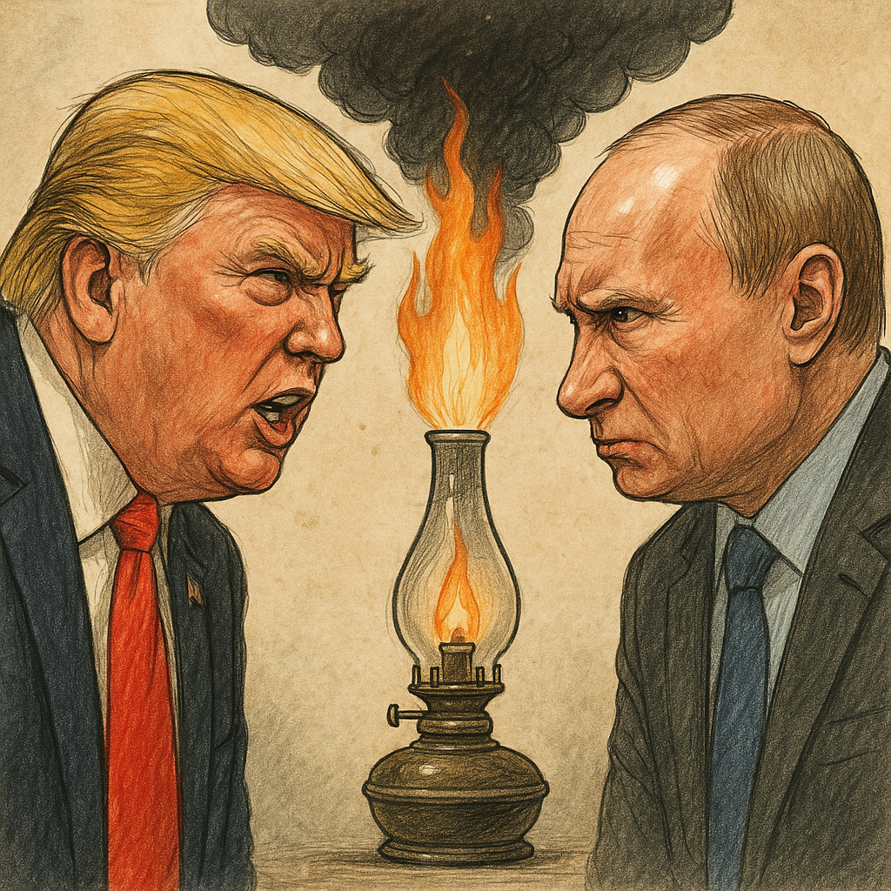

Publicado em 2025-05-03 11:35:13
Durante anos foram os “irmãos siameses da desordem”. Um guiava a democracia pela sarjeta, o outro desenterrava impérios no meio de crateras nucleares. Trump e Putin. Putin e Trump. Um casal improvável mas funcional, com mais afinidade que muitos casamentos com regime de comunhão total.
Mas agora... parece que o amor geoestratégico azedou.
Dizem fontes bem colocadas no salão dourado de Mar-a-Lago que Trump já não atende os telefonemas do Kremlin. E que Putin, ofendido, começou a dizer entre dentes (com sotaque soviético e olhar glacial) que o “Donald não passa de um vendedor de casinos falhados com saudades do Twitter”.
É oficial: os dois estão de candeias às avessas. E o mundo, entre atónito e divertido, assiste.
Tudo começou quando Putin, em reunião com líderes chineses e iranianos, comentou:
“Trump é imprevisível… mas não no bom sentido. Parece mais um algoritmo de YouTube do que um estratega.”
Trump, ao saber disto, respondeu no seu Truth Social:
“Putin? Um tipo muito esperto. Mas pouco agradecido. Se não fosse eu, ele ainda estava a negociar gás natural com Merkel.”
As alfinetadas continuaram:
Enquanto isso, os diplomatas internacionais vivem como terapeutas de casal exaustos. A ONU tentou juntar os dois num fórum sobre estabilidade global, mas Trump levou uma máscara de urso com a inscrição “Vlad, liga-me”, e Putin respondeu com um vídeo de arquivo onde Trump dança com um taco de basebol ao som de “Back in the USSR”.
A NATO fez o que faz melhor: um relatório e uma conferência de imprensa a dizer que está “muito preocupada”.
Enquanto isso, a Ucrânia continua em escombros, o gás sobe, os tratados caem, e a democracia vai à missa acender velas.
Mas há quem diga que isto faz parte do guião. Talvez Trump e Putin estejam a encenar uma zanga para o segundo ato de uma peça maior: o golpe final na ordem global. Ou talvez... tenham apenas ciúmes um do outro.
Porque afinal, no xadrez do caos, há lugar apenas para um rei. E nenhum deles quer ser peão.
Francisco Gonçalves